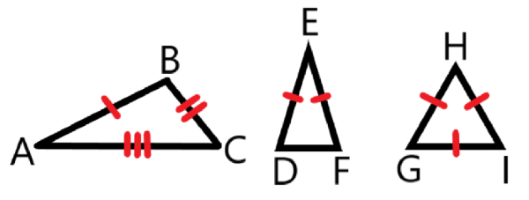
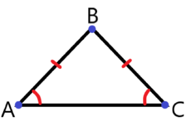
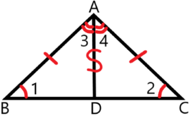
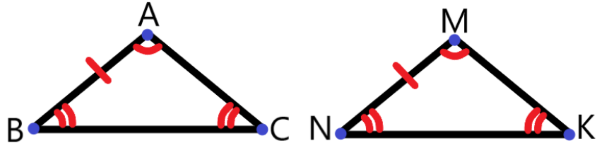

Определение 23:
Равнобедренный треугольник — это треугольник, у которого две стороны равны.Определение 24:
Равносторонний (правильный) треугольник — это треугольник, у которого все три стороны равны.Примечание: понятия "равносторонний треугольник" и "правильный треугольник" означают одно и то же.

Рис. 18. △ABC — разносторонний (AB ≠ BC, AB ≠ AC, BC ≠ AC); △DEF — равнобедренный (DE = EF); △GHI — равносторонний (GH = HI = IG).

Рис. 19. В равнобедренном △ABC: AB и BC — боковые стороны; AC — основание; ∠BAC и ∠BCA — углы при основании.
Теорема 19:
В равнобедренном треугольнике углы при основании равны.

Рис. 20 к обоснованию теоремы 19 и к теореме 20.
Обоснование теоремыДано: △ABC — равнобедренный.Доказать: ∠1 = ∠2.Доказательство:Сделаем дополнительное построение — проведём биссектрису AD.Рассмотрим △BDA и △CDA:1. Сторона AD — общая.2. BA = AC (как боковые стороны равнобедренного треугольника).3. ∠3 = ∠4 (AD — биссектриса).
Из пунктов 1—3 следует, что △BDA = △CDA (по двум сторонам и углу между ними).
В равных треугольниках соответствующие углы равны, то есть ∠1 = ∠2, что и требовалось доказать.
Теорема 20:
В равнобедренном треугольнике высота, биссектриса и медиана,
проведенные к основанию равнобедренного треугольника, совпадают.
Пояснение: на рисунке 20 отрезок [AD] является и высотой, и биссектрисой, и медианой одновременно.Теорема 21:
Если боковая сторона и угол между боковыми сторонами одного равнобедренного треугольника равны боковой стороне и углу между боковыми сторонами другого равнобедренного треугольника, то такие треугольники равны.

Рис. 21 к теореме 21 и её обоснованию.
Обоснование теоремыДано: △ABC и △MNK — равнобедренные (AB = AC, MN = MK); AB = MN; ∠BAC = ∠NMK.Доказать: △ABC = △MKN.Доказательство:1. AB = MN (по условию).2. AC = AB, MK = MN, значит AC = MK.3. ∠BAC = ∠NMK — по условию.
Из пунктов 1—3 следует, что △ABC = △MKN (по двум сторонам и углу между ними),
что и требовалось доказать.
Теорема 22:
Биссектрисы равнобедренного треугольника, проведённые из углов при основании, равны.
Теорема 23:
Медианы равнобедренного треугольника, проведённые к боковым сторонам, равны.
Теорема 24:
Высоты равнобедренного треугольника, проведённые к боковым сторонам, равны.
Теорема 25:
Биссектрисы в равностороннем (правильном) треугольнике равны.
Теорема 26:
Медианы в равностороннем (правильном) треугольнике равны.
Теорема 27:
Высоты в равностороннем (правильном) треугольнике равны.
Признаки равнобедренного треугольника
Теорема 28:
Если медиана и высота треугольника совпадают, то этот треугольник — равнобедренный.
Теорема 29:
Если биссектриса и высота треугольника совпадают, то этот треугольник — равнобедренный.
Теорема 30:
Если медиана и биссектриса треугольника совпадают, то этот треугольник — равнобедренный.
Теорема 31:
Если в треугольнике два угла равны, то этот треугольник — равнобедренный.
Теорема 32:
Если две медианы треугольника равны, то этот треугольник — равнобедренный.
Теорема 33:
Если две биссектрисы треугольника равны, то этот треугольник — равнобедренный.
Теорема 34:
Если две высоты треугольника равны, то этот треугольник — равнобедренный.
Теорема 35:
Если в треугольнике все три угла равны, то этот треугольник — равносторонний (правильный).
Теорема 36:
Если все три медианы треугольника равны, то этот треугольник — равносторонний (правильный).
Теорема 37:
Если все три биссектрисы треугольника равны, то этот треугольник — равносторонний (правильный).
Теорема 38:
Если все три высоты треугольника равны, то этот треугольник — равносторонний (правильный).